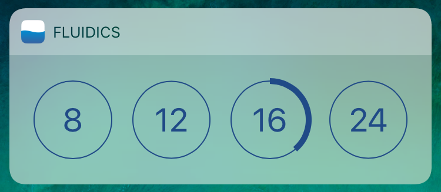

fluidics: easy, simple water tracking
Grey Patterson
 fluidicsapp.com
fluidicsapp.com
fluidicsapp.com
fluidicsapp.com
Music is rich in information - from things like what key and time signature are being played in up to the sociocultural context in which the lyrics were written.
The field of music information retrieval exists to provide musicologists with automated tools. Complex tasks like genre recognition remain out of reach. Neural networks offer a solution to this problem: a form of machine learning that consist of nodes connected by weighted edges. Input is propagated through the network from node to node along those edges.
Neural networks are based on the structure of the human mind: nodes serve as neurons, and weighted lines between them alter the input values as they flow through the network.
A deep neural network is one with several hidden layers. (Any layer other than the input and output layers is considered 'hidden.')
Neural networks are an alternative to traditional programming. Instead of writing an algorithm by hand, simply provide training data - inputs, and the output expected: ([0, 821, 1643, ...],"art")
Instead of writing an algorithm by hand, simply provide training data - inputs, and the output expected: ([0, 821, 1643, ...],"art")
The software uses stochastic gradient descent to minimize the cross-entropy of the correct versus the calculated answers.
The output can be either a direct categorization or a softmax (weighted probability distribution). Softmax results were used throughout, as they provide more information for analysis.
The main screen of the app makes it easy to quickly log water with a long press. Tapping one of the options allows them to change it to a different number. These numbers are also accessible from the widget:
The app is integrated with Apple Health and utilizes the HealthKit framework to securely store all user data.
Users can switch between metric and imperial units from the Settings page.